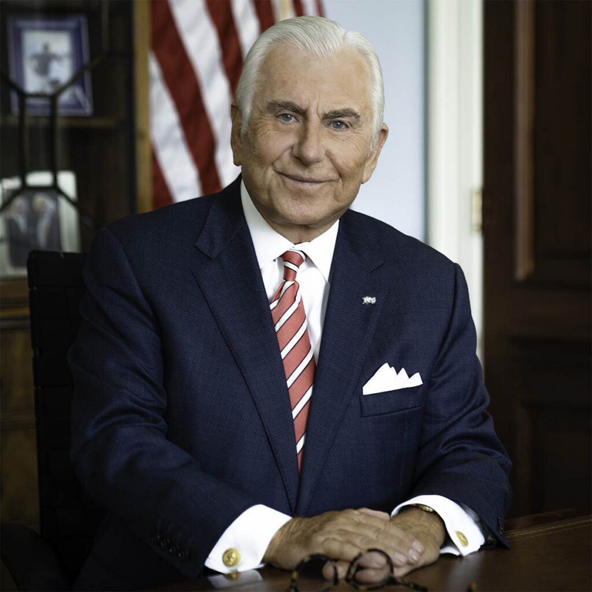

01
Emotional Intelligence
The capability 68% of C-suite executives name as their single top reason to hesitate before hiring a college graduate.
HPU C-Suite Survey, 503 executives, 2022
High Point University The Premier Life Skills University
The skills employers say they cannot find are the ones HPU has been teaching since 2005.
The President’s Seminar EXP 1101

EXP 1101 is a required course President Nido Qubein teaches personally to every incoming class since 2006. He is the only sitting university president in the country who does so.
From there, the Life Skills curriculum grows across four years eight skill categories, eleven tuition-free microcredentials, and access to forty-plus global leaders In-Residence on campus.
of the Class of 2025 were working or in grad school within six months of graduating.
First in North Carolina, and thirteen points above the national average. A direct outcome of High Point University's Premier Life Skills curriculum.
NACE First-Destination Survey Class of 2025 HPU Career and Professional Development
Why Life Skills Matter More in an AI Economy
In 2005, President Qubein told his first incoming class they were not being prepared for the world as it is. They were being prepared for the world as it is going to be. He did not know that twenty years later the World Economic Forum would name the skills gap the number one barrier to business transformation, or that the CEOs of JPMorgan Chase and Microsoft would say the same thing in nearly the same language. He built the curriculum anyway.
Nido R. Qubein becomes the seventh president of High Point University and requires every incoming freshman to take a Life Skills course he teaches personally. Communication, leadership, fiscal literacy, ethical judgment, and relational capital. No other sitting university president in the country does this.
HPU opens 1924 Prime in the R.G. Wanek Center as a fine dining restaurant and learning lab. Students dine weekly in business attire, without a phone, served by staff trained to teach professional etiquette at the table. Four years of experience in a setting that mirrors the professional world they are preparing to enter.
Cottrell Hall opens, bringing career development, internships, entrepreneurship, and student success coaching together under one roof so students can connect every experience they accumulate to what comes next.
The Center for Community Engagement launches, connecting HPU students to the city of High Point through structured service and scholarship programs. Students develop the capacity to lead and work alongside people whose circumstances differ from their own.
HPU launches tuition-free microcredentials in networking, business etiquette, coachability, and leadership, each verified and resume-ready before graduation. The Class of 2025 graduates with a 99% career placement rate, first in North Carolina.
Harvard economist David Deming publishes “The Growing Importance of Social Skills in the Labor Market” in the Quarterly Journal of Economics. Social-skill-intensive employment grew by nearly 12 percentage points as a share of the U.S. labor force between 1980 and 2012. Math-intensive but less social occupations shrank.
MIT economist David Autor publishes NBER Working Paper 32140. AI extends human expertise rather than replacing it. The workers who benefit most are the ones who bring the judgment to direct it.
Jamie Dimon, CEO of JPMorgan Chase: “Learn your EQ, learn how to be good in a meeting, how to communicate, how to write.” Satya Nadella, CEO of Microsoft: “If you just have IQ without EQ, it’s just a waste of IQ.” Deloitte’s 2026 Global Human Capital Trends names competitive advantage as less about technology and more about cultivating the human edge.
The Brookings Institution and GovAI find 6.1 million U.S. workers at meaningful AI displacement risk. The differentiator: transferable, broadly developed human skills.
The world is looking for somewhere to learn these skills. HPU has been the answer for twenty years.
WHAT THE RESEARCH SHOWS
In May 2022, HPU’s Survey Research Center asked 503 C-level executives at U.S. companies with 2,500 or more employees one direct question: when a new college hire succeeds or fails, what drives it?
of what makes a new hire succeed or fail comes down to life skills — not technical know-how.
of executives say weak emotional intelligence is their top reason to pass on a new grad.
of executives say poor motivation is the leading reason new hires fail to deliver.
What the World Is Saying
CEOs, economists, and workplace researchers independently, in their own words. Filter by the skill they’re naming.

“Learn your EQ, learn how to be good in a meeting, how to communicate, how to write.”

“If you just have IQ without EQ, it’s just a waste of IQ.”

“Greatness is not intelligence. Greatness comes from character, and character isn’t formed out of smart people — it’s formed out of people who suffered.”

“The people who will do well are the people who learn how to use these tools whether you want to be a teacher or a doctor.”

“Our most resilient skills are distinctly human: compassion, creativity, communication, courage, and curiosity. Human skills are becoming the new ‘hard skills.’”

“They’re not soft skills. They’re human skills, behavioural skills, character skills. I don’t care what we call them I care that we build them.”

“We have to be more mindful about training them along multiple dimensions.”

“Emotional intelligence represents a set of human abilities that AI cannot replace.”

“There’s no such thing as soft skills. Empathy, patience, effective confrontation these are human skills, and they must be learned.”

“The quintessential human skill that’s going to remain important is metacognition the ability to synthesize information and make good decisions.”

“Empathy is about standing in someone else’s shoes, feeling with their heart. It is hard to outsource and automate and it makes the world a better place.”

“By harnessing our natural human advantages curiosity, adaptability, and empathy we can scale organizations that don’t just respond to change but shape it.”

“That term ‘soft skills’ has to be retired. These are complex, behavioral, uniquely human skills that cannot be done by machines.”
The Research Agrees
Every number below points to the same conclusion: life skills are the most durable career investment a student can make.
What HPU Teaches Across All Four Years
The eight Life Skills categories at HPU are not a collection of tips and workshops. Each one has dedicated coursework, verified credentials, and a direct line to the outcomes HPU graduates are known for.
The capability 68% of C-suite executives name as their single top reason to hesitate before hiring a college graduate.
HPU C-Suite Survey, 503 executives, 2022
The willingness to receive feedback and improve. Named by 38% of executives as the primary factor separating new hires who succeed from those who don’t.
HPU C-Suite Survey, 503 executives, 2022
Workers in communication-intensive roles earn roughly 20% more per quartile of intensity than peers with less communication-intensive work.
Georgetown Center on Education & the Workforce, 2020
The capability most resistant to automation and the hardest to reveal in a thirty-minute interview.
MIT Work of the Future, 2020
The drive to keep going and the belief that you can get better. 38% of executives say motivation is what separates new hires who thrive from those who stall.
HPU C-Suite Survey, 503 executives, 2022
Brookings and GovAI identified 6.1 million workers facing both high AI exposure and low adaptive capacity. Transferable skills are the differentiator.
Brookings Institution & GovAI, January 2026
Leadership is among the five most-demanded competencies across all job categories that require a bachelor’s degree.
Georgetown Center on Education & the Workforce, 2020
AI extends human expertise rather than replacing it. The workers who benefit most are the ones with the judgment to direct it.
David Autor, MIT, NBER Working Paper 32140, 2024
The 99% career placement rate does not come from a single program. It comes from a four-year ecosystem built from the ground up around the capabilities employers say they look for most.
Innovators in Residence
More than forty global leaders hold formal In-Residence appointments at High Point University, returning to campus year after year to teach, mentor, and open doors for students directly. These are six of them.


Innovator in Residence
Co-Founder, Apple


Entrepreneur in Residence
Co-Founder & First CEO, Netflix


Sports Executive in Residence
Former CEO, Dallas Mavericks


Talent Expert in Residence
Former VP of Talent, Chick-fil-A


Journalist in Residence
Co-Anchor, ABC's “Nightline”


Broadcaster in Residence
Former Director, NBC's “Today” Show
EXTRAORDINARY EDUCATION + LIFE SKILLS
Life Skills build the capabilities employers cannot find. Academic preparation builds the expertise to back them up. HPU holds 100% first-time licensure pass rates across five nationally examined programs, thirteen professional accreditations, and more than forty million dollars in active federal research grants. Both halves work together. The 99% placement rate is what they produce.

Frequently Asked Questions